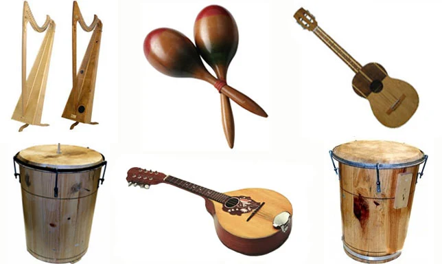

El estado Miranda es reconocido musicalmente por dos expresiones tradicionales: el joropo central y los toques de las diversas baterías de tambores asociados a las festividades de la Cruz de Mayo y San Juan.
El arpa tuyera es un instrumento musical que se usa para tocar el joropo tuyero, un ritmo musical central. Se caracteriza por tener cuerdas intercaladas con cuerdas metálicas.
La maraca más común es la de calabaza, que se toca sosteniéndola por su cuello natural o por un mango de madera y agitándola para golpear los pequeños guijarros, semillas secas u otros elementos, contra las paredes reforzadas interiormente por unas largas y duras espinas.
Los tambores del estado Miranda son instrumentos musicales que se tocan en la Fiesta de San Juan Bautista en el pueblo de Curiepe. Estos tambores son de origen africano y se llaman quitiplás, culo e´puya y mina.